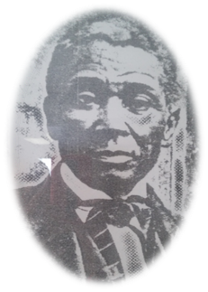
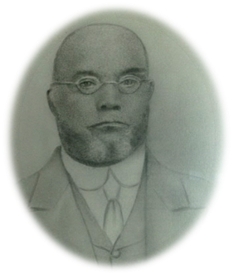
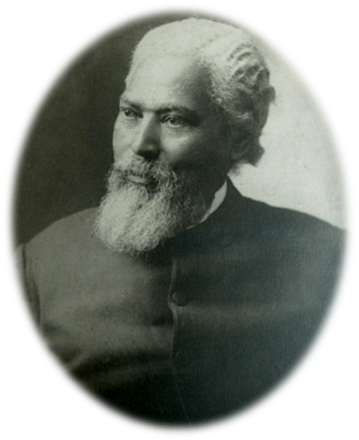
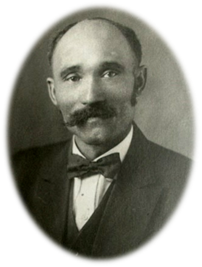
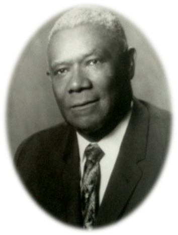
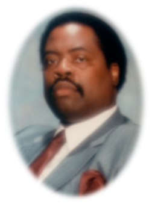

Our History
With a desire and a belief in the promises of God, 28 members exhibited faith and perseverance to secure the charter from the First Baptist Church of Louisville (now Walnut Street Baptist Church) to create a new congregation in 1844. Originally named Second African American Baptist Church, the name was later changed to Green Street Baptist Church and membership grew to over 1100 by 1874. Through God's grace and provisions, the church was able to purchase property, organize for worship, manage its administration and resolve internal conflicts.
Green Street has been instrumental in the seed planting of other congregations: Forest Baptist, Hill Street Baptist, and First Baptist Church, Anchorage. As early as 1869, Green Street was a member of the General Association of Kentucky Baptists and was instrumental in the creation of Simmons Bible College.
Green Street has only had eight pastors during her 171-year history: Rev. George W. Wells, Elder Richard Sneathen, Rev. Daniel Gaddie, Rev. Henry W. Jones, Rev. Jesse V. Bottoms, Rev. Tyrone P. Jones, III, and our present pastor, Rev. Carl. J. Jones. With God as their leader and these ministers as His under-shepherds, Green Street has worked to develop ministries which have helped spread the gospel and develop strong Christian brothers and sisters.
-

Rev. George Wells
1844-1850
Donec semper quam scelerisque tortor dictum gravida. In hac habitasse platea dictumst. Nam pulvinar, odio sed rhoncus suscipit, sem diam ultrices mauris, eu consequat purus metus eu velit. Proin metus odio, aliquam eget molestie nec, gravida ut sapien. Phasellus quis est sed turpis sollicitudin venenatis sed eu odio. Praesent eget neque eu eros interdum malesuada non vel leo. Sed fringilla porta ligula.
-

Rev. Charles Satchell
1850-1851
Donec semper quam scelerisque tortor dictum gravida. In hac habitasse platea dictumst. Nam pulvinar, odio sed rhoncus suscipit, sem diam ultrices mauris, eu consequat purus metus eu velit. Proin metus odio, aliquam eget molestie nec, gravida ut sapien. Phasellus quis est sed turpis sollicitudin venenatis sed eu odio. Praesent eget neque eu eros interdum malesuada non vel leo. Sed fringilla porta ligula.
-

Rev. Richard Sneathen
1852-1872
Donec semper quam scelerisque tortor dictum gravida. In hac habitasse platea dictumst. Nam pulvinar, odio sed rhoncus suscipit, sem diam ultrices mauris, eu consequat purus metus eu velit. Proin metus odio, aliquam eget molestie nec, gravida ut sapien. Phasellus quis est sed turpis sollicitudin venenatis sed eu odio. Praesent eget neque eu eros interdum malesuada non vel leo. Sed fringilla porta ligula.
-

Rev. Daniel Gaddie
1872-1911
Donec semper quam scelerisque tortor dictum gravida. In hac habitasse platea dictumst. Nam pulvinar, odio sed rhoncus suscipit, sem diam ultrices mauris, eu consequat purus metus eu velit. Proin metus odio, aliquam eget molestie nec, gravida ut sapien. Phasellus quis est sed turpis sollicitudin venenatis sed eu odio. Praesent eget neque eu eros interdum malesuada non vel leo. Sed fringilla porta ligula.
-

Rev. Henry Wise Jones, D.D.
1912-1950
Donec semper quam scelerisque tortor dictum gravida. In hac habitasse platea dictumst. Nam pulvinar, odio sed rhoncus suscipit, sem diam ultrices mauris, eu consequat purus metus eu velit. Proin metus odio, aliquam eget molestie nec, gravida ut sapien. Phasellus quis est sed turpis sollicitudin venenatis sed eu odio. Praesent eget neque eu eros interdum malesuada non vel leo. Sed fringilla porta ligula.
-

Rev. Jesse V. Bottoms, Sr.
1950-1986
Donec semper quam scelerisque tortor dictum gravida. In hac habitasse platea dictumst. Nam pulvinar, odio sed rhoncus suscipit, sem diam ultrices mauris, eu consequat purus metus eu velit. Proin metus odio, aliquam eget molestie nec, gravida ut sapien. Phasellus quis est sed turpis sollicitudin venenatis sed eu odio. Praesent eget neque eu eros interdum malesuada non vel leo. Sed fringilla porta ligula.
-

Rev. Tyrone P. Jones, Ph.D.
1988-1990
Donec semper quam scelerisque tortor dictum gravida. In hac habitasse platea dictumst. Nam pulvinar, odio sed rhoncus suscipit, sem diam ultrices mauris, eu consequat purus metus eu velit. Proin metus odio, aliquam eget molestie nec, gravida ut sapien. Phasellus quis est sed turpis sollicitudin venenatis sed eu odio. Praesent eget neque eu eros interdum malesuada non vel leo. Sed fringilla porta ligula.
-
Rev. Carl J. Jones
1991-Present
Donec semper quam scelerisque tortor dictum gravida. In hac habitasse platea dictumst. Nam pulvinar, odio sed rhoncus suscipit, sem diam ultrices mauris, eu consequat purus metus eu velit. Proin metus odio, aliquam eget molestie nec, gravida ut sapien. Phasellus quis est sed turpis sollicitudin venenatis sed eu odio. Praesent eget neque eu eros interdum malesuada non vel leo. Sed fringilla porta ligula.